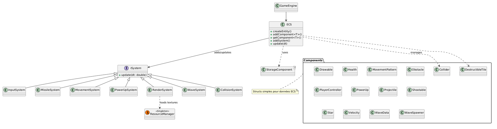

- Generated by
 1.9.8
1.9.8
|
R-Type Game Engine 1.0
Documentation de l'ECS et des systèmes pour le projet R-Type
|
Cette documentation se concentre sur la game engine du projet R-Type, en particulier sur l'Entity Component System (ECS), les systèmes (systems), et leur utilisation dans le fichier main.cpp du client. L'objectif est de clarifier les relations entre ces éléments, en expliquant comment l'ECS gère les entités, les composants et les systèmes, et comment tout cela est orchestré pour créer un jeu de type shoot'em up.
La game engine est implémentée dans les répertoires include/engine et src/engine, avec une séparation claire entre le core (ECS), les factories (pour créer des entités), et les systems (pour la logique du jeu). Le server gère le réseau UDP, mais la game engine est principalement utilisée côté client pour la logique de jeu, le rendering et les inputs.
La game engine est basée sur un paradigme ECS (Entity-Component-System), qui est une architecture courante en développement de jeux pour favoriser la composition plutôt que l'héritage. Cela permet une flexibilité accrue : les entités sont des IDs simples, les composants stockent les données, et les systèmes appliquent la logique.
uint32_t) représentant un objet dans le jeu (ex. : joueur, ennemi, projectile).L'ECS est défini dans ecs.hpp et utilisé dans le main.cpp du client pour initialiser le jeu, créer des entités via des factories, et boucler sur les updates des systèmes.
EntityFactory.hpp, StageFactory.hpp) créent des entités pré-configurées avec des composants.ISystem et sont ajoutés à l'ECS pour être exécutés dans la boucle de jeu.main.cpp, tout est assemblé : création de l'ECS, ajout de systèmes, initialisation d'entités, et boucle update/render.L'implémentation de l'ECS est dans ecs.hpp. C'est une implémentation légère, optimisée pour un maximum de 2048 entités (MAX_ENTITIES) et 128 types de composants (MAX_COMPONENT).
std::uint32_t). Les entités sont créées via createEntity() et détruites via killEntity(). Une queue recycle les IDs des entités détruites pour éviter la fragmentation.std::bitset<MAX_COMPONENT>) qui indique quels composants une entité possède. Cela permet des requêtes rapides comme getEntitiesByComponents<T1, T2...>().getComponentID<T>() (utilise un compteur statique).MAX_ENTITIES). Elle utilise un bitset pour tracker quelles entités ont ce composant.std::vector<IComponentStorage*>).std::vector<std::unique_ptr<ISystem>>).createEntity() : Alloue un nouvel ID.addComponent<T>(Entity e, T component) : Ajoute un composant à une entité, met à jour la signature.getComponent<T>(Entity e) : Récupère un composant (pointeur).getEntitiesByComponents<T1, T2...>() : Retourne les entités ayant tous les composants spécifiés (via signatures).addSystem(std::unique_ptr<ISystem> system) : Ajoute un système.update(double dt) : Appelle update(dt) sur tous les systèmes.&_ecs) pour accéder aux entités et composants via des queries comme getEntitiesByComponents().Entity e = ecs.createEntity();ecs.addComponent(e, Position{0.f, 0.f}); → Met à jour la signature de l'entité et stocke dans StorageComponent<Position>.auto entities = ecs.getEntitiesByComponents<Position>(); → Itère sur les signatures pour trouver les matches.Les composants sont des structs simples définis dans Components.hpp. Ils représentent des données pures, sans logique.
{float x, y} – Position dans l'espace 2D.{float x, y} – Vitesse de déplacement.{std::string textureId, sf::IntRect rect, int layer, bool visible, float scale, float rotation} – Pour le rendering.{uint8_t playerId, bool isShooting} – Contrôles du joueur.{float width, height, bool solid, uint8_t team, int damage} – Pour les collisions.{int current, int max} – Points de vie.{float cooldown, float shootDelay, float missileSpeed, int damage, uint8_t team, std::string textureId, float offsetX, float offsetY, bool isShooting, bool tripleShot} – Pour les tirs.{Type type (enum: Linear, Sinus, etc.), float amplitude, frequency, radius, speed} – Patterns de mouvement pour ennemis.{float velocity, int damage} – Pour les missiles.{Type type (ex. TripleShot), float duration} – Bonus.MovementSystem sur <Position, Velocity, MovementPattern>).Les systèmes héritent de ISystem (dans ecs.hpp), qui définit virtual void update(double dt) = 0;. Chaque système accède à l'ECS pour query les entités pertinentes et updater leurs composants.
<PlayerController, Velocity, Shootable>. Relations : Lit SFML events, met à jour Velocity et isShooting.<Position> basé sur <Velocity> et <MovementPattern> (pour patterns comme Sinus, Zigzag). Relations : Applique dt à la position, avec modulations pour patterns ennemis.<Position, Collider>. Gère dommages via <Health, Projectile>. Relations : Itère sur paires d'entités, résout overlaps, applique dégâts, détruit entités (ecs.killEntity).<Shootable, Position>. Crée projectiles (via EntityFactory), gère cooldowns et tripleShot. Relations : Utilise factories pour spawn, supprime hors-écran.<Shootable>. Relations : Détruit power-up après collision.ECS.addComponent. Relations : Timer-based, utilise factories implicitement.<Position, Drawable, Star, etc.>. Tri par layers. Relations : Accède à ResourceManager pour textures, clear/draw/display sur window.RenderSystem).ecs.addSystem(std::make_unique<System>(ecs, ...));.update(dt), chaque système query des entités spécifiques et modifie leurs composants.Le main.cpp du client (dans src/client) assemble tout :
sf::RenderWindow (1920x1080 fullscreen).ECS ecs.ResourceManager (singleton).InputSystem, MovementSystem, CollisionSystem, MissileSystem, PowerUpSystem, WaveSystem, RenderSystem (certains avec params comme window).Factory::createStarfield(ecs, ...).Factory::createScreenBorders(ecs, ...).Factory::createPlayer(ecs, ...).WaveSystem.loadLevel(...).sf::Clock pour dt.window.isOpen() :ecs.update(dt) → Exécute tous les systèmes.render.update(dt) (mais déjà dans ecs.update ? Attends, render est un système, mais code montre un appel manuel ? Dans le code truncaté, il y a des updates manuelles après ecs.update, mais idéalement tout via systèmes).ecs.update → Propagé à chaque système.RenderSystem, events à InputSystem.Ce projet est une implémentation d'un shoot'em up inspiré de R-Type, utilisant un ECS (Entity Component System) pour la game engine côté client, et un serveur UDP pour le réseau.
ISystem.ISystem).  Description : Graphe UML montrant les relations entre ECS, ISystem, les systèmes et les composants.Components et autres.Utilisez la barre de recherche en haut pour trouver des classes spécifiques (ex. ECS, MovementSystem).
Pour plus de détails sur l'ECS, voir Classe ECS.
Projet Epitech 2025 - Gabriel VILLEMONTE - Mathis COUTAYE - Clement CHELLIER - Lucas HOAREAU